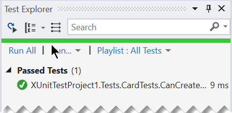
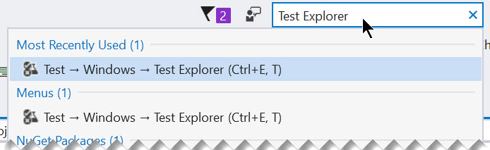

Welcome to All In With Functional C#.
Visual Studio 2015 and C# 6.0 will do, however for the best experience use Visual Studio 2017 and C# 7.x
A basic knowledge of the C# language is recommended.
In this workshop you will learn about functional C# by building a poker scoring game using C# 7.x features. You'll learn what features in C# 7.x support functional programming. The pros/cons of functional vs. imperative programming will be explored to understand the strengths of each style.
Key topics and takeaways:
In addition to this guide, a full presentation file and completed code can be found under the following folders in the repository.
In this chapter you're setting up the basics for unit testing.
Start by creating a new Class Library project. You'll use this project throughout the rest of this tutorial to build your application.
Click File > New Project > xUnit Test Project (.NET Core)
Name the project CsharpPoker
Delete UnitTest1.cs
Using the package manager console, run the following commands
PM> Install-Package FluentAssertions
Alternatively, you can use the package manager GUI
The next steps are for Visual Studio 2015 users. You may advance to step 2.0.
Start by creating a new Class Library project. You'll use this project throughout the rest of this tutorial to build your application.
Click File > New Project > Class Library
Name the project CsharpPoker
Delete Class1.cs
With the new project created, it's time to start building unit tests. For this guide, we are using xUnit. xUnit is a commonly used unit testing framework in .NET.
Open the package manager console, in quick launch, type: package manager console
Using the package manager console, run the following commands
PM> Install-Package xunit
PM> Install-Package xunit.runner.visualstudio
PM> Install-Package FluentAssertions
Alternatively, you can use the package manager GUI
In this chapter you'll learn how to create simple unit tests with xUnit.
Throughout this workshop you'll be using poker cards to learn new functional language features. In this exercise you'll create a new folder to hold unit tests and write your first unit test for a poker card. To keep things simple, in this workshop you'll use one project for all of your code. In a real-world app you would probably use a separate test project.
Add a folder named Tests to your project.
In /Tests Add an empty class file named CardTests.cs
Make sure the CardTests class is defined as public so the test runner can see the test class.
public class CardTests
In CardTests.cs add a new test method named CanCreateCard. Test methods in xUnit use the [Fact] attribute. You may need to import xUnit with a using statement, highlight Fact and press ctrl+. (control period), the press enter.
[Fact]
public void CanCreateCard() { }
In the CanCreateCard method write a test that confirms that a new Card object can be created.
var card = new Card();
Assert.NotNull(card);
There is no class defined yet, so you can consider this the first failing test. In the next exercise you'll create a Card object to satisfy this test.
In this exercise you'll create a card object.
In the root folder of your project, create a Card class named Card.cs.
Make the card class public.
public class Card {}
This should be enough to satisfy the first unit test. Build the project (ctrl+shift+b), open Test Explorer and click Run All. You should receive a green check-mark next to the CanCreateCard test.

If the Test Explorer window is not visible, type Test Explorer in the quick launch box.

A card must be able to represent a Suit and Value to be useful. In the next exercise you'll add some properties to the card and tests to insure a card has a Suit and Value when it is created.
Give the card properties to hold a CardValue and CardSuit
public class Card
{
public CardValue Value { get; set; }
public CardSuit Suit { get; set; }
}
Create enums for CardValue and CardSuit
// CardValue.cs
public enum CardValue
{
Two = 2,
Three,
Four,
Five,
Six,
Seven,
Eight,
Nine,
Ten,
Jack,
Queen,
King,
Ace
}
// CardSuit.cs
public enum CardSuit
{
Spades,
Diamonds,
Clubs,
Hearts
}
Change the CanCreateCard test so that a Card has a value when it is created, rename the test to CanCreateCardWithValue. Test to make sure the properties are NotNull.
[Fact]
public void CanCreateCardWithValue() {
var card = new Card();
Assert.NotNull(card.Suit);
Assert.NotNull(card.Value);
}
Note that the test will pass even when no value was assigned. This is because enums have a default value.
To insure that a value is intentionally set, add a constructor to the Card that requires a Suit and Value.
public class Card
{
public Card(CardValue value, CardSuit suit)
{
Value = value;
Suit = suit;
}
public CardValue Value { get; set; }
public CardSuit Suit { get; set; }
}
Change the assertion so that it checks for a predetermined Suit and Value.
var card = new Card(CardValue.Ace, CardSuit.Clubs);
Assert.Equal(CardSuit.Clubs, card.Suit);
Assert.Equal(CardValue.Ace, card.Value);
Now when a Card is created it must have its properties set to a value. In the next exercise you'll refactor the Card so that it is immutable, meaning that its properties cannot be changed once the object is created.
Re-run the test to verify that the test passes.
If you're using Visual Studio 2017 Enterprise edition. You can save time by enabling Live Unit Testing.
One positive aspect of C# programming is that both functional and OOP styles of programming are not mutually exclusive. In this exercise you'll override the inherited ToString method of the Card object and use it to describe the Card's values.
Create a new test CanDescribeCard, this test should test a Card with the values of CardValue.Ace and CardSuit.Spades. The ToString method should return "Ace of Spades".
[Fact]
public void CanDescribeCard()
{
var card = new Card(CardValue.Ace, CardSuit.Spades);
Assert.Equal("Ace of Spades", card.ToString());
}
Run the test to verify that it fails.
Next, update the Card object to make the test pass. Override the ToString method on the Card class and utilize the string interpolation syntax to write out the Card's description.
public override string ToString()
{
return $"{Value} of {Suit}";
}
Re-run the test to verify that the test passes.
The ToString method is a simple, single line of code that returns a value. In this exercise you'll use an expression-bodied member to reduce the amount of code further into a concise expression.
Find the ToString method of the Card class. Remove the braces {} from the method, and replace the return statement with a lambda arrow =>. The arrow implies that the method will return a value, and the result is a much simpler syntax.
This will reduce the method to a simple one line statement.
public override string ToString() => $"{Value} of {Suit}";
Re-run the test to verify that the test passes.
In functional programming immutable objects are used to reduce complexity and avoid unintended changes in state. An immutable object's state cannot be modified after it is created, lowering the risk of side-effects.
In C# 6 or higher, backing fields and explicit readonly property declarations are not needed. By simply removing the set operator from a property will make it a read-only property.
In the Card class, remove the set declarations from each property.
public class Card
{
public Card(CardValue value, CardSuit suit)
{
Value = value;
Suit = suit;
}
public CardValue Value { get; }
public CardSuit Suit { get; }
public override string ToString() => $"{Value} of {Suit}";
}
Now the properties can only be set during the object's initialization.
Re-run the test to verify that the test passes.
In this chapter you created a simple object and used some functional aspects of C#. By using expression bodied-members, the ToString method was reduced to a single expression. The Card class was made immutable by using the objects constructor and removing the set declarations from the object. In the Card object, both OOP and functional programming were used in a single class.
This chapter also outlined the basics of writing and running unit tests. Now that you're comfortable with running unit tests, you will not be instructed to run tests after this point, instead feel free to run them as needed throughout the remainder of the next chapters.
In the previous chapter you created a simple object and used some functional aspects of C#.
In this chapter you'll start with imperative and OOP style programming. Throughout the examples you'll be asked to refactor using functional programming. This will help identify where to find balance between the two styles. As the this guide progresses, instructions will become less detailed so that you can explore your on your own.
Now that you're comfortable with running unit tests, you will not be instructed to run tests after this point, instead feel free to run them as needed. For example, after every code change.
The poker hand will be used throughout the workshop. The Hand will represent a player's hand of cards. For this workshop a five card hand will be scored using imperative and functional programming.
Create a test class named HandTests in the /Tests folder. Make sure HandTests is public.
Use the following tests to create a Hand class that has a Cards property and a Draw method.
[Fact]
public void CanCreateHand()
{
var hand = new Hand();
Assert.False(hand.Cards.Any());
}
[Fact]
public void CanHandDrawCard()
{
var card = new Card(CardValue.Ace, CardSuit.Spades);
var hand = new Hand();
hand.Draw(card);
Assert.Equal(hand.Cards.First(), card);
}
Create a Hand class that satisfies the tests.
public class Hand
{
public Hand()
{
Cards = new List<Card>();
}
public List<Card> Cards { get;}
public void Draw(Card card)
{
Cards.Add(card);
}
}
The Hand class will hold a players hand of cards. In the next exercises you will be scoring the Hand of cards from the Cards property in the Hand class.
In a game where all players hands are a equal in rank, the winner is decided by comparing the highest card in their hands. Add a HighCard method to the Hand that returns the highest CardValue in the hand.
Below is a test method you can use to validate your HighCard method.
[Fact]
public void CanGetHighCard()
{
var hand = new Hand();
hand.Draw(new Card(CardValue.Seven, CardSuit.Spades));
hand.Draw(new Card(CardValue.Ten, CardSuit.Clubs));
hand.Draw(new Card(CardValue.Five, CardSuit.Hearts));
hand.Draw(new Card(CardValue.King, CardSuit.Hearts));
hand.Draw(new Card(CardValue.Two, CardSuit.Hearts));
Assert.Equal(CardValue.King, hand.HighCard().Value);
}
When this test passes, move on to the next exercise.
In the previous exercise, you determined the high card. Now add a HandRank GetHandRank method that will return the Hand's HandRank.
Add the HandRank enum to your project.
public enum HandRank
{
HighCard,
Pair,
TwoPair,
ThreeOfAKind,
Straight,
Flush,
FullHouse,
FourOfAKind,
StraightFlush,
RoyalFlush
}
Use the following tests to create a GetHandRank method on the Hand object that will return the correct HandRank for the test. Only score the Ranks below, you'll be refactoring as the workshop progresses and scoring additional HandRanks as you learn about OOP and functional programming.
[Fact]
public void CanScoreHighCard()
{
var hand = new Hand();
hand.Draw(new Card(CardValue.Seven, CardSuit.Spades));
hand.Draw(new Card(CardValue.Ten, CardSuit.Clubs));
hand.Draw(new Card(CardValue.Five, CardSuit.Hearts));
hand.Draw(new Card(CardValue.King, CardSuit.Hearts));
hand.Draw(new Card(CardValue.Two, CardSuit.Hearts));
Assert.Equal(HandRank.HighCard, hand.GetHandRank());
}
[Fact]
public void CanScoreFlush()
{
var hand = new Hand();
hand.Draw(new Card(CardValue.Two, CardSuit.Spades));
hand.Draw(new Card(CardValue.Three, CardSuit.Spades));
hand.Draw(new Card(CardValue.Ace, CardSuit.Spades));
hand.Draw(new Card(CardValue.Five, CardSuit.Spades));
hand.Draw(new Card(CardValue.Six, CardSuit.Spades));
Assert.Equal(HandRank.Flush, hand.GetHandRank());
}
[Fact]
public void CanScoreRoyalFlush()
{
var hand = new Hand();
hand.Draw(new Card(CardValue.Ten, CardSuit.Spades));
hand.Draw(new Card(CardValue.Jack, CardSuit.Spades));
hand.Draw(new Card(CardValue.Queen, CardSuit.Spades));
hand.Draw(new Card(CardValue.King, CardSuit.Spades));
hand.Draw(new Card(CardValue.Ace, CardSuit.Spades));
Assert.Equal(HandRank.RoyalFlush, hand.GetHandRank());
}
When this test passes, move on to the next exercise.
Now that the HighCard, Flush, and RoyalFlush hand ranks have been scored, review the answers to see how the code can be written using functional programming.
Open open the folder /chapter3/answers/first-pass
Open Hand.cs and review the comments
Now that the HighCard, Flush, and RoyalFlush hand ranks have been scored, review the answers to see how the code can be refactored using functional programming.
Open open the folder /chapter3/answers/refactored
Open Hand.cs and review the comments
Refactor your own code and make sure all of your tests pass.
Now it's time to refactor the tests using method chains. Pipelines are often found in functional programming languages. Pipelines allow functions to be chained or composed to produce easily maintainable and readable code.
Open /Tests/HandTests.cs
Add a reference to FluentAssertions.
using FluentAssertions;
Modify the Assert statement to use the FluentAssertions chain instead. To do this, start with the value that will be tested and continue with the method Should().Be(expectedValue)
Assert.Equal(CardValue.King, hand.HighCard().Value);
becomes
hand.HighCard().Value.Should().Be(CardValue.King);
Below is a example of the completed CanGetHighCard test
[Fact]
public void CanGetHighCard()
{
var hand = new Hand();
hand.Draw(new Card(CardValue.Seven, CardSuit.Spades));
hand.Draw(new Card(CardValue.Ten, CardSuit.Clubs));
hand.Draw(new Card(CardValue.Five, CardSuit.Hearts));
hand.Draw(new Card(CardValue.King, CardSuit.Hearts));
hand.Draw(new Card(CardValue.Two, CardSuit.Hearts));
hand.HighCard().Value.Should().Be(CardValue.King);
}
Refactor all tests to use Fluent Assertions.
In the previous chapter you solved a few hand ranks using LINQ and refactored tests with method chains with the help of FluentAssertions.
In this chapter you'll continue with imperative and OOP style programming. Throughout the examples you'll be asked to refactor using functional programming. Later in this chapter, you'll learn about working with concurrency in C#.
Feel free to run tests as needed. For example, after every code change.
Continue to update the poker hand used throughout the workshop.
[Fact]
public void CanScorePair()
{
var hand = new Hand();
hand.Draw(new Card(CardValue.Ten, CardSuit.Clubs));
hand.Draw(new Card(CardValue.Jack, CardSuit.Spades));
hand.Draw(new Card(CardValue.Nine, CardSuit.Spades));
hand.Draw(new Card(CardValue.Ten, CardSuit.Hearts));
hand.Draw(new Card(CardValue.Ace, CardSuit.Spades));
hand.GetHandRank().Should().Be(HandRank.Pair);
}
[Fact]
public void CanScoreThreeOfAKind()
{
var hand = new Hand();
hand.Draw(new Card(CardValue.Ten, CardSuit.Clubs));
hand.Draw(new Card(CardValue.Jack, CardSuit.Spades));
hand.Draw(new Card(CardValue.Nine, CardSuit.Spades));
hand.Draw(new Card(CardValue.Ten, CardSuit.Hearts));
hand.Draw(new Card(CardValue.Ten, CardSuit.Spades));
hand.GetHandRank().Should().Be(HandRank.ThreeOfAKind);
}
[Fact]
public void CanScoreFourOfAKind()
{
var hand = new Hand();
hand.Draw(new Card(CardValue.Ten, CardSuit.Clubs));
hand.Draw(new Card(CardValue.Jack, CardSuit.Spades));
hand.Draw(new Card(CardValue.Ten, CardSuit.Spades));
hand.Draw(new Card(CardValue.Ten, CardSuit.Hearts));
hand.Draw(new Card(CardValue.Ten, CardSuit.Spades));
hand.GetHandRank().Should().Be(HandRank.FourOfAKind);
}
[Fact]
public void CanScoreFullHouse()
{
var hand = new Hand();
hand.Draw(new Card(CardValue.Ten, CardSuit.Clubs));
hand.Draw(new Card(CardValue.Jack, CardSuit.Spades));
hand.Draw(new Card(CardValue.Ten, CardSuit.Spades));
hand.Draw(new Card(CardValue.Jack, CardSuit.Hearts));
hand.Draw(new Card(CardValue.Ten, CardSuit.Spades));
hand.GetHandRank().Should().Be(HandRank.FullHouse);
}
When this tests pass, move on to the next exercise.
Now that the Pairs (of a kind) hand ranks have been scored, review the answers to see how the code can be written using functional programming.
Open open the folder files/04-Pairs/answers/first-pass
Open Hand.cs and review the comments
Now that the Pairs (of a kind) hand ranks have been scored, review the answers to see how the code can be refactored using functional programming.
Open open the folder files/04-Pairs/answers/refactored
Open Hand.cs and review the comments Open EvalExtensions.cs and review the comments
In the previous chapter you solved more hand ranks using higher order functions and refactored with an extension method to create a method chain.
In this chapter you'll continue with imperative and OOP style programming. Throughout the examples you'll be asked to refactor using functional programming. Later in this chapter, you'll learn about working with the Yield operator in C#.
Feel free to run tests as needed. For example, after every code change.
Continue to update the poker hand used throughout the workshop.
[Fact]
public void CanScoreStraight()
{
var hand = new Hand();
hand.Draw(new Card(CardValue.Ten, CardSuit.Clubs));
hand.Draw(new Card(CardValue.Jack, CardSuit.Spades));
hand.Draw(new Card(CardValue.Queen, CardSuit.Spades));
hand.Draw(new Card(CardValue.King, CardSuit.Hearts));
hand.Draw(new Card(CardValue.Ace, CardSuit.Spades));
hand.GetHandRank().Should().Be(HandRank.Straight);
}
[Fact]
public void CanScoreStraightUnordered()
{
var hand = new Hand();
hand.Draw(new Card(CardValue.Ace, CardSuit.Spades));
hand.Draw(new Card(CardValue.Queen, CardSuit.Clubs));
hand.Draw(new Card(CardValue.Jack, CardSuit.Spades));
hand.Draw(new Card(CardValue.Ten, CardSuit.Spades));
hand.Draw(new Card(CardValue.King, CardSuit.Hearts));
hand.GetHandRank().Should().Be(HandRank.Straight);
}
When this tests pass, move on to the next exercise.
Now that the Straight hand rank has been scored, review the answers to see how the code can be written using functional programming.
Open open the folder files/05-Sequences/answers/first-pass
Open Hand.cs and review the comments
Now that the Straight hand rank has been scored, review the answers to see how the code can be refactored using functional programming.
Open open the folder files/05-Sequences/answers/refactored
Open Hand.cs and review the comments Open EvalExtensions.cs and review the comments
In the previous chapter you solved more hand ranks using LINQ and refactored with the yield keyword to create a custom LINQ-like extension method.
In this chapter you'll refactor to use a more functional approach to scoring a hand.
Feel free to run tests as needed. For example, after every code change.
Up until now we have combined our Hand object with the behavior of scoring. Ideally these concepts should not be mixed. Because there is no state to be concerned about, the scoring functions can be moved with relative ease.
Create a new public static class named FiveCardPokerScorer
Open Hand.cs and move the scoring functionality to FiveCardPokerScorer.cs. Because the functionality will be external to the data, the funcitons will need to be modified to accept the data as a parameter. In addtion, this will bring the application closer in-line with functional programming because the new functions are considered "pure functions".
Example:
public static class FiveCardPokerScorer
{
public static Card HighCard(IEnumerable<Card> cards) => cards.Aggregate((highCard, nextCard) => nextCard.Value > highCard.Value ? nextCard : highCard);
private static bool HasFlush(IEnumerable<Card> cards) => cards.All(c => cards.First().Suit == c.Suit);
}
Create a new test class in /Tests named FiveCardPokerScorerTests
Move the corresponding tests from HandTests to FiveCardPokerScorerTests.
[Fact]
public void CanGetHighCard()
{
var hand = new Hand();
hand.Draw(new Card(CardValue.Seven, CardSuit.Spades));
hand.Draw(new Card(CardValue.Ten, CardSuit.Clubs));
hand.Draw(new Card(CardValue.Five, CardSuit.Hearts));
hand.Draw(new Card(CardValue.King, CardSuit.Hearts));
hand.Draw(new Card(CardValue.Two, CardSuit.Hearts));
FiveCardPokerScorer.HighCard(hand.Cards).Value.Should().Be(CardValue.King);
}
If you're using VS2015 C# 6.0 skip this exercise.
Create a new public class named Ranker
Open Hand.cs and create a new private method named Rankings that generates a collection of Tuples. Use the following code as a starting point, fill in the remaining items
private List<(Func<IEnumerable<Card>, bool> eval, HandRank rank)> Rankings() =>
new List<(Func<IEnumerable<Card>, bool> eval, HandRank rank)>
{
// more ranks here
};
Find the GetHandRank method and remove the expression after the =>
The result should be:
public static HandRank GetHandRank() =>
After the => write a new expression that uses the Rankings that evaluates the hand rank.
Hint: think LINQ
If you're using VS2017 C# 7.x skip this exercise.
Create a new public class named Ranker
The Ranker an immutable class that will hold a delegate responsible for evaluating cards and a corresponding hand rank.
public class Ranker
{
public Ranker(Func<IEnumerable<Card>, bool> eval, HandRank rank)
{
Eval = eval;
Rank = rank;
}
public Func<IEnumerable<Card>, bool> Eval { get; }
public HandRank Rank { get; }
}
Open Hand.cs and create a new private method named Rankings that generates a collection of Ranker.
Use the following code as a starting point, fill in the remaining Ranker items
private List<Ranker> Rankings() => new List<Ranker>
{
new Ranker(cards => HasRoyalFlush(), HandRank.RoyalFlush),
// more ranks here
};
Find the GetHandRank method and remove the expression after the =>
The result should be:
public static HandRank GetHandRank() =>
After the => write a new expression that uses the List
Hint: think LINQ
The newest version of GetHandRank can be more flexible than the previous versions. Because it is a collection, it can easily be added to and operated on using LINQ.
Adding new hand ranks is easy. Simply add a new Ranker to the Rankings collection and the GetHandRank method will do the rest.
Make the GetHandRank method even more robust by allowing Ranks to be added in any order.
Find the GetHandRank method and order the Rankings by descending order by their Strength
// With Tuples
.OrderByDescending(rule => rule.rank)
// Without Tuples
.OrderByDescending(rule => rule.Rank)
Next, solve the following unit test
[Fact]
public void CanScoreTwoPair()
{
var hand = new Hand();
hand.Draw(new Card(CardValue.Ace, CardSuit.Clubs));
hand.Draw(new Card(CardValue.Ten, CardSuit.Spades));
hand.Draw(new Card(CardValue.Nine, CardSuit.Spades));
hand.Draw(new Card(CardValue.Ten, CardSuit.Hearts));
hand.Draw(new Card(CardValue.Ace, CardSuit.Spades));
hand.GetHandRank().Should().Be(HandRank.TwoPair);
}
Continue building the project in your own direction. Use what you have learned to add multiple hands and players to a game and score a poker game.
Add support for other poker games types, with new rules or more cards. See how loosely coupled you can make the rules/ranks from the cards and hands.